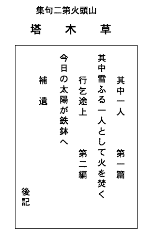

六月廿日 （伊佐行乞）
朝あけの道は山の青葉のあざやかさだ、昇る日と共に歩いた。
いつのまにやら道をまちがへてゐたが、――それがかへつてよかつた――山また山、青葉に青葉、分け入るといつた感じだつた、蛙声、水声、虫声、鳥声、そして栗の花、萱の花、茨の花、十薬の花、うつぎの花、――しづかな、しめやかな道だつた。
途中行乞しつゝ、伊佐町へ着いたのは一時過ぎだつた、こゝでまた三時間ばかり行乞して、どう
今日の行程七里、そして所得は、――
銭四十三銭に米八合。
伊佐で、春田禅海といふ真言宗の行乞同宿は四国生れの老遍路さん、彼もまた何か複雑な事情を持つてゐるらしい、ルンペンは単純にして複雑な人間である。
その人のしんせつ、ふしんせつ、頭脳のよさわるさ、――道をたづねるとき、あまりによくわかる。
今日の支出は、――
木賃二十五銭、飯米五合、たばこ四銭、端書六銭、酒代十銭、……
伊佐は風流な町だ、山あり田あり、鶯が鳴き不如帰が鳴く、狼が出るかも知れない、沙漠のやうに石灰工場の粉が吹き流れてゐる。まだ蚊帳なしで寝られたのはよかつた、蚤の多いのには閉口した、古いキングを読んだり隣家のレコードの唄を聞いたり、――これもボクチン情調だ。
朝風すゞしく馬糞を拾ふ人と犬
・山里をのぼりきて捨猫二匹
捨てられて仔猫が白いの黒いの
・夏草の、いつ道をまちがへた
・虫なくほとりころがつてゐる壺
・道がなくなればたたへてゐる水
・これからまた峠路となるほとゝぎす
・ほとゝぎすあすはあの山こえてゆかう
・山里をのぼりきて捨猫二匹
捨てられて仔猫が白いの黒いの
・夏草の、いつ道をまちがへた
・虫なくほとりころがつてゐる壺
・道がなくなればたたへてゐる水
・これからまた峠路となるほとゝぎす
・ほとゝぎすあすはあの山こえてゆかう
六月廿一日
習慣で早く眼が覚めたが起きずにゐた、梅雨空らしく曇つて、霧雨がふつてゐた。
七時出立、すぐ行乞をはじめる、憂欝と疲労とをチヤンポンにしたやうな気分である。
時々乞食根性、といふよりも酒飲根性が出て困つた、乞ふことは嫌だが飲むことは好きだ。
ひさ／″＼で、飯ばかりの飯をかみしめた、そのうまさは水のうまさだ、味はひつくせぬ味はひだ。
本降りとなつたが、わざと濡れて歩きつゞけた、厚東駅まで八里、六時の汽車に乗つた。
山頭火には其中庵がある、そこは彼にとつて唯一の安楽郷だ！
今日の行乞所得
米一升六合 銭四十一銭
途上一杯の酒、それこそまさに甘露！米一升六合 銭四十一銭
汽車は便利以外の何物でもない、自動車は外道車だ！
足で歩くにまさるものなし、からだで歩け。
今日の汽車賃三十銭は惜しかつた。
・寝ころべば筍も生えてゐる
・山鶯も山頭火も年がよりました
・梅雨空をキヤルメラふいてきたのは鮮人
・水の音、飯ばかりの飯をかむ
・おばあさんが自慢する水があふれる
・いつかここでべんたうたべた萱の穂よ
・笠きて簑きて早乙女に唄なく
・笠をぬぎしつとりと濡れ
・ふるもぬれるも旅から旅で
・禿山しみじみ雨がふるよ
・合羽きるほどはふらない旅の雨ふる
・青葉に雨ふりまあるい顔
［＃改ページ］・山鶯も山頭火も年がよりました
・梅雨空をキヤルメラふいてきたのは鮮人
・水の音、飯ばかりの飯をかむ
・おばあさんが自慢する水があふれる
・いつかここでべんたうたべた萱の穂よ
・笠きて簑きて早乙女に唄なく
・笠をぬぎしつとりと濡れ
・ふるもぬれるも旅から旅で
・禿山しみじみ雨がふるよ
・合羽きるほどはふらない旅の雨ふる
・青葉に雨ふりまあるい顔
六月廿一日
暮れきるまへに帰庵した、さつそく御飯を炊く、筍をひきぬいてきて煮る、掃く、拭く。……
安心満腹、前後不覚、よい雨の夜のよい眠だつた。
六月廿二日 夏至。
熟睡した快さ、雨の音のうれしさ。――
・よい雨の窓をあけはなつ
塩はある（何と塩の尊くて、そして安いことよ）、その塩で御飯をいたゞきませう。いよ／＼本格的梅雨となつた。
どこも田植で、純日本的風景が展開されてゐる。
樹明君から来信、私が酒を買ひ、君が下物を持つてくることになつた（酒代は、ありがたや、句集代を樹明君が保管してゐてくれたので、十分、十分、十分である）。
合羽を着て酒買ひに。
約をふんで、樹明君がやつてきた、鮹と胡瓜とを持つて。
うまい酒だつた、酔うて倒れた、眼が覚めたらもう朝が来てゐた。
・さみだるゝや真赤な花の
・濡れて尾をたれて野良犬のさみだれ
・はたらく空腹へさみだれがそゝぐ
・梅雨空のしたしい足音がやつてくるよ（改作）
・あめのはれまの枇杷をもいではたべ
・梅雨あかり私があるく蝶がとぶ
・びつしより濡れてシロ掻く馬は叱られてばかり
追悼
・夏木立、そのなかで首をくゝつてゐた
・濡れて尾をたれて野良犬のさみだれ
・はたらく空腹へさみだれがそゝぐ
・梅雨空のしたしい足音がやつてくるよ（改作）
・あめのはれまの枇杷をもいではたべ
・梅雨あかり私があるく蝶がとぶ
・びつしより濡れてシロ掻く馬は叱られてばかり
追悼
・夏木立、そのなかで首をくゝつてゐた
六月廿三日
曇、后晴、やつぱり空梅雨か。
早起、好日、さてもほがらかな今朝なるかな。
糸瓜を植ゑる、五本生えたが三本は虫に喰はれた。
道ばたの青梅を十個ばかり盗んできて（捨てゝあるのだから、むしろ拾うてきて）漬ける、果して焼酎漬が出来るか知ら。
可愛い赤蛙がぴよんと飛ぶ、そして考へてゐる、まだ子供、いや青年だ。
樹明君が陰惨な顔で来た、私の杞憂が杞憂でなかつたことを証拠立てゝゐる、昨夜のよい酒が今朝のわるい酒となつたのか、いたましい事実である、私は君を責めずにはゐられない、亡弟の忌中であり、学校職員であり、夫であり父である君としては、あまりに不謹慎である、君よ、自ら苦と罪とを求めたまふな、しばらく寝たまへと私がいふ、どうしても寝られないと君はいふ、さびしい問答のかなしい真実である、……飯が出来るのも待たないでＪさんといつしよに帰つていつた。……
午後、ハガキを投凾すべく、石油を買ふべく街へ出かける、小郡にもガソリンガールが出現した、その軽快愛すべしであつた。
地虫が鳴きだした、地上は夏でも地中は秋だらう。
・草しづかにして蝶がもつれたりはなれたり
糸瓜植ゑた日また逢うてさびしい話
・糸瓜植ゑる、そこへ哀しい人間がきた
・考へつつ出来た御飯が生煮で
・梅雨晴ごし／＼トラツクを洗ふ
親も子も田を植ゑる孫も泥をふむ
・まづしいけれどもよい雨の糸瓜を植ゑる
・とんぼつるめばてふてふもつれるま昼のひかり
・煮る蕗のほろにがさにもおばあさんのおもかげ
・障子をたたくは夏の虫
・蠅もおちつかない二人のあいだ
・みんないんでしまうより虫が鳴きだした
・雑草のなか蛙のなかや明け暮れて
昼も蚊がくるうつくしい蚊
糸瓜植ゑた日また逢うてさびしい話
・糸瓜植ゑる、そこへ哀しい人間がきた
・考へつつ出来た御飯が生煮で
・梅雨晴ごし／＼トラツクを洗ふ
親も子も田を植ゑる孫も泥をふむ
・まづしいけれどもよい雨の糸瓜を植ゑる
・とんぼつるめばてふてふもつれるま昼のひかり
・煮る蕗のほろにがさにもおばあさんのおもかげ
・障子をたたくは夏の虫
・蠅もおちつかない二人のあいだ
・みんないんでしまうより虫が鳴きだした
・雑草のなか蛙のなかや明け暮れて
昼も蚊がくるうつくしい蚊
六月廿四日
晴、時々曇、晴れても曇つても日々好日である。
今日は山口を行乞しよう、六時出立、九時着、行乞三時間、三時帰庵、行乞相はよかつた、所得もわるくなかつた。
今日の所得
銭 四十五銭 米 一升三合
今日の買物
煙草 四銭 焼酎 十一銭
端書 六銭 味噌 八銭
途上で拾ひあげた句七つ。――銭 四十五銭 米 一升三合
今日の買物
煙草 四銭 焼酎 十一銭
端書 六銭 味噌 八銭
・ふりかへる柿の葉のひらり
・アスフアルトもをんなくさい朝の風
・叱られる馬で痩せこけた馬で梅雨ふる
・はれたりふつたり青田となつた
梅の実も落ちたまゝお客がない
・梅雨晴の大きい家が建つ
□
・山頭火は其中庵にふくろうがうたふ
△秘密を持たないやすらかさ、身心かくすところなくして光あまねし、浮世夢の如く塵に似たり、その夢を諦らめその塵を究めるのが人生である。・アスフアルトもをんなくさい朝の風
・叱られる馬で痩せこけた馬で梅雨ふる
・はれたりふつたり青田となつた
梅の実も落ちたまゝお客がない
・梅雨晴の大きい家が建つ
□
・山頭火は其中庵にふくろうがうたふ
△食ふや食はずでも（正確にいへば、飲むや飲まずでも）山頭火にはやつぱり其中庵がいちばんよろしいことを今日もしみ／″＼痛感した。
△捨てる事と拾ふ事とは、その心構へに於て同一事である。
△しづかに燃えるもの――その生命――その感動がなければ芸術は（宗教も科学も哲学も）、光らない、俳人よ、先づ自己を省みよ。
△日が暮れたら寝る、夜が明けたら起きる、食べたくなつたら食べる、歩きたくなつたら歩く、――さういふ生活へ私は入りつゝある、それは無理のない、余裕のある、任運自在の生活である。
・この花を見つけた蝶の白い風
・陽が落ちるそよ風の青い葉が落ちる
・ゆふ風いそがしい蜘蛛のいとなみがはじまる
・陽が落ちるそよ風の青い葉が落ちる
・ゆふ風いそがしい蜘蛛のいとなみがはじまる
六月廿五日
明けゆく空、朝風はよいかな。
郵便――うれしいたより、私は郵便によつて唯一の社会的交渉を保つてゐる。
蔬菜の手入れ、トマトと茄子とは上出来、胡瓜と大根とは不出来、しかし、楽在其中で、趣味第一、実用第二である。
△「嘘をいはない」ではまだ浅い、「嘘がいへない」まで深くならなければならない。
△梅干の味、それは飯の味、水の味につぐものだ、日本人としてそれが味へなければ、日本人の情緒は解らない。
△無一物底無尽蔵は観念として解つてゐるだけだが、無一物中無関心は体験として解つてゐる。
△人情的なものを私からとりのぞかなければならない。
久しぶりに入浴、湯はよいかな。
此頃の私はおちついてゐるよりも、むしろしづんでゐるらしい。
飯のうまさ、眠りのよろしさ、――これだけでも私は幸福だ。
・南天の花へは蜂がきてこぼす
・前田も植ゑて涼しい風
炎天の鶏を売りあるく
・田植べんとうはみんないつしよに草の上で
カフヱーもクローバーもさびれた蓄音器の唄
・雑草しづかにしててふてふくればそよぐ
・ちぎられてもやたらに伸びる草の穂となつた
改作附加
笠きて簑きてさびしや田植唄はなく
・前田も植ゑて涼しい風
炎天の鶏を売りあるく
・田植べんとうはみんないつしよに草の上で
カフヱーもクローバーもさびれた蓄音器の唄
・雑草しづかにしててふてふくればそよぐ
・ちぎられてもやたらに伸びる草の穂となつた
改作附加
笠きて簑きてさびしや田植唄はなく
六月廿六日
いつからとなく、早く寝て早く起きるやうになつた、此頃は十時就寝、四時起床、昼寝一時間ばかり、そして純菜食（仕方なしでもあるが）、だから、身心ます／＼壮健、ことに頭脳の清澄を覚える、こんな風ならば、いつまで生きるか解らない、長生すれば恥多しといふ、といつて自殺はしたくない、まあ、生きられるだけは生きよう、すべてが業だ、因果因縁だ、どうすることもできないし、どうなるものでもない、日々随波逐波、時々随縁赴感、それでよろしい、よろしい。
今朝は碧巌の雲門日々好日を味読した。
新聞屋さんが新聞を持つてきて、今月分だけは進呈しますといふ、タダより安いものはない、よからう。
掟三章（其中庵来訪者の）を書いて貼つて置いた。――
（未定稿）［＃「（未定稿）」は底本では、掟の文章の上に横書き］
一、辛いもの好きは辛いものを、甘いもの好きは甘いものを持参すべし。
一、うたふもをどるも自由なれども春風秋水のすなほさあるべし。
一、威張るべからず気取るべからず欝ぐべからず其中一人の心を持すべし。
蠅はほとんどゐない、誰かゞ連れてきたか、私についてきたか、時々二三匹ゐることもあるが、すぐ捕りつくせる、蚊は多い、昼も藪蚊が出て刺す、朝夕は無数の蚊軍が私一人をめがけて押し寄せる、蚊遣線香が買へないから、私はさつそく蚊帳の中へ退却する、そしてその小天地を悠々逍遙する。……一、うたふもをどるも自由なれども春風秋水のすなほさあるべし。
一、威張るべからず気取るべからず欝ぐべからず其中一人の心を持すべし。
午後は畑を中耕施肥した、トマトよ、茄子よ、胡瓜よ、伸びよ、ふとれよ、実れよ（人間はヱゴイストですね！）。
なごやかな一日だつた。
樹明君はどんな様子か、敬坊の来庵はいつだらうか、逢ひたいな。
・朝風すゞしく爪 でもきらう
・なにかさみしい茅花が穂に出て
・草しげるそこは死人を焼くところ
蜘蛛が蠅をとらへたよろこびの晴れ
からつゆやうやく芽ぶいたしようが
たま／＼人が来てほゝづき草を持つていつた
ま昼青い葉が落ちる柿の葉
・ぢつとしてをればかなぶんがきてさわぐ
・けふもいちにち誰も来なかつた螢
・なにかさみしい茅花が穂に出て
・草しげるそこは死人を焼くところ
蜘蛛が蠅をとらへたよろこびの晴れ
からつゆやうやく芽ぶいたしようが
たま／＼人が来てほゝづき草を持つていつた
ま昼青い葉が落ちる柿の葉
・ぢつとしてをればかなぶんがきてさわぐ
・けふもいちにち誰も来なかつた螢
六月廿七日
梅雨模様で降りだしたが、すぐまた晴れて暑かつた。
墓地に咲いてゐた夾竹桃を切つて活ける、赤い夾竹桃はまことに南国の夏の花である、美しい情熱が籠つてゐる。
何もかも生きてゐる、……とつく／″＼思ふ、畑を手入れしてゐる時に殊にこの感が深い（胡瓜の蔓など実に不可思議である）。
昼寝はよいかな、まさに一刻千金に値する（二刻は百金！）。
遠く西方の山で郭公がしきりに啼いてゐた。
△漬物は日本人にはなくてはならぬ食物である、私は今日、大根を間引いて漬けた、明日は食べられる、おいしからうぞ。
何かにつけて、彼及彼女を思ひだす、見頓思漸、理先事後、詮方もない事実である。
晩にはお菜がないので、小さい筍を抜いて煮て食べた、一皿に盛るだけしかなかつたが、ダシもなかつたが、それでも十分うまかつた。
△晴耕雨読、そして不足なく剰余もない生活、さういふ生活を私は欣求する、さういふ生活がほんとうではあるまいか。
△自浄吾意、これが人間生活の基調でなければならない、念々不停流、これが生活態度でなければならない、朝々日は東より出で
樹明来信、これで私も安心した、どうやら因縁が熟して時節到来したらしい、お互にしつかりやりませうよ。
よい朝のよい御飯が出来た
草ふかくおどりあがつたよ赤蛙
晴れさうなきりぎりすのないてはとぶ
・ちぎられてまた伸びてもう咲いてゐる
・いつもかはらぬお地蔵さんで青田風
・水音をふんで下ればほととぎす
・しづむ陽をまへにして待つてゐる
・すつぱだかへとんぼとまらうとするか
・ふりかへるうしろすがたが年よつた
雑草にうづもれてゐるてふてふとわたくし
・とんできたかよ螢いつぴき
草ふかくおどりあがつたよ赤蛙
晴れさうなきりぎりすのないてはとぶ
・ちぎられてまた伸びてもう咲いてゐる
・いつもかはらぬお地蔵さんで青田風
・水音をふんで下ればほととぎす
・しづむ陽をまへにして待つてゐる
・すつぱだかへとんぼとまらうとするか
・ふりかへるうしろすがたが年よつた
雑草にうづもれてゐるてふてふとわたくし
・とんできたかよ螢いつぴき
六月廿八日
早すぎるけれど、寝床でぐづ／＼してゐるのは嫌だから跳ね起きる、そしてあるだけの米を飯にする。
雨、雨の音はいいな、その音に聴き入る、身心なごやかになる。
昼の蚊は憎いな。
敬坊から来信、明日来庵といふ、うれしいな。
敬坊は人道的、樹明君は人情的、私はそのどちらでもあり、そのどちらでもない、むしろ非人道的、非人情的でありたいと考へてゐる（感傷的であるのは恥づかしい）。
梅雨らしく降つたり晴れたりする、やむなく行乞は見合せる、明日の米がないけれど、明日は明日の事だ、明日の事は明日に任しておけ！
午後は草取、取らずにはゐられない草だけ取る、雑草、雑草、雑草風景は悪くない、其中庵にふさはしい。
・あんなに高く蜘蛛が網張る朝焼
朝焼しめやかな雨がふる
・朝焼の大きい葉が落ちた
・雨が地べたをたたく音の中
・昼も蚊が喰ふ肉体をいたはる
・赤い花のしぼめば白い花のひらく
・伸びあがつて蔓草のとりつくものなし
雑草みんないつしんに雨を浴びて
・竹の子も竹となつた窓の明け暮れ
・竹の子竹になる明るい雨ふる
晴れると開く花で
・梅雨空へ伸びたいだけ伸びてゐる筍
・降つたり照つたり何事もなくて暮れ
追加一句
・日が長い家から家へ留守ばかり（行乞）
窓へ竹の子竹となつて（追加）
朝焼しめやかな雨がふる
・朝焼の大きい葉が落ちた
・雨が地べたをたたく音の中
・昼も蚊が喰ふ肉体をいたはる
・赤い花のしぼめば白い花のひらく
・伸びあがつて蔓草のとりつくものなし
雑草みんないつしんに雨を浴びて
・竹の子も竹となつた窓の明け暮れ
・竹の子竹になる明るい雨ふる
晴れると開く花で
・梅雨空へ伸びたいだけ伸びてゐる筍
・降つたり照つたり何事もなくて暮れ
追加一句
・日が長い家から家へ留守ばかり（行乞）
窓へ竹の子竹となつて（追加）
六月廿九日
今朝は一粒の米もないから、そして味噌は残つてゐたから、それだけ味噌汁にして吸ふ、実は裏から筍二本！
夜明けの蛙の唄はよろしい。
黴には閉口、もつとも梅雨と黴とは離れられないが。
断食――たゞしくは絶食、私の今日の場合では――それもよからう、よからうよ。
葉が落ちる、柿の葉はばさり――昔の人は婆娑と書いたがその通り。
虻には困る、蚋にも。
日が照れば、何とうつくしいトカゲの色ごろも！
虫の声はいゝ、コウロギはまだをさなく、キリギリスはいゝ。
曇、行乞は今日も駄目。
適意――自適――この言葉にふくむニユアンスが、すなはち、私のニユアンスだ、――かういふ生活もないことはない。
娘さんがうたふ、梅をもいでゐる、その梅の実を一升買ふ。
昼飯は五厘銅貨を豆腐に代へて、それですます。
△豆腐の味は水のそれとおなじ、冷暖自知、いひがたし。
野の花はどれもうつくしい、をどりこ草を活ける、露草がもう咲いてゐた。
敬治君、約束の如く来庵、予感の如く樹明君も来庵、よい酒をのんだ、うまい、うまい。
樹明君早く帰る、敬治君と私とは街へ出て、米を買ひ、ビールを飲んで戻つて寝た、めでたし、めでたし、ほんにめでたやなあ！
夜ふけて飯を炊いて食べる。――
螢がとぶ、とばない螢がこゝそこ。
・てふてふひらひらおなかがすいた
・けふは水ばかりのむ風のふく
わたしの胡瓜の花へもてふてふ
花にもあいたかてふてふもつれつつ
・障子ひらけば竹に雀の前景がある
・むしあつく蟻は獲物をだいてゐる
・ひとりでたべるとうがらしがからい
・萱の穂も風が畳をふきぬける
・どなた元 気で夏畑の人や虫や
・ひらくより蝶が花のうへ
……………（これは酔線なり、今日の）
・けふは水ばかりのむ風のふく
わたしの胡瓜の花へもてふてふ
花にもあいたかてふてふもつれつつ
・障子ひらけば竹に雀の前景がある
・むしあつく蟻は獲物をだいてゐる
・ひとりでたべるとうがらしがからい
・萱の穂も風が畳をふきぬける
・どな
・ひらくより蝶が花のうへ
……………（これは酔線なり、今日の）
六月三十日
ほとんど徹夜した、敬治君はよく眠つてゐる。
曇、すこし朝焼、多少の風。
昨夜はやつぱり飲みすぎだつた、私は女難を知らないけれど酒難は知りぬいてゐる。
今朝、それこそほろりと歯がぬけた、ぬけさうでぬけなかつた歯が。
敬治君が睡眠の足つた上機嫌で県庁へ出張する、私はひとりしづかに読書、『唯物辨證
裏山で自殺者が見つかつたといふ、もう腐つて骨になつてゐたさうだが、情死だといふ、どこの男か、どんな女か、――それは話題でなくて問題だ。
たま／＼人がきた、それは掛取だつた！ 皮肉といへば皮肉である。
客車便で小さい荷物が来た、森さんからの贈物、桑名の名物、時雨蛤である、ありがたい、うれしい、敬治君と共に味ふ、一杯やりたいな、桑名の殿さんでもうたひたいな。
敬治君といつしよに入浴、帰途、米を買うて貰つた、焼酎を飲ませて貰つた、ほろ／＼ほろ／＼、ぐつすりと寝た。
・草苺ほのかに朝の水がたゝへ（改作）
・青葉のむかういちはやくカフヱーの灯
咲いてゐる花を見つけてきてゐるてふてふ
・草の葉の晴れててふてふ三つとなつて
・こゝまで機械がうなつてゐる梅雨空
・うらから仔蟹もはうてくる
山の情死者を悼む四句
・青葉につゝまれてふたりで死んでゐる
骨だけとなり梅雨晴るゝ山
夏木立ふたりで死んで腐つてゐた
・夏山ひそかにも死んでいつたか南無阿弥陀仏
必然に、そして自然に、私は私の弟の死態を思ひうかべた。……・青葉のむかういちはやくカフヱーの灯
咲いてゐる花を見つけてきてゐるてふてふ
・草の葉の晴れててふてふ三つとなつて
・こゝまで機械がうなつてゐる梅雨空
・うらから仔蟹もはうてくる
山の情死者を悼む四句
・青葉につゝまれてふたりで死んでゐる
骨だけとなり梅雨晴るゝ山
夏木立ふたりで死んで腐つてゐた
・夏山ひそかにも死んでいつたか南無阿弥陀仏
七月一日
今朝はまたずゐぶん早かつた、御飯ができお汁ができてもまだ夜が明けなかつた。
もう七月である、時間といふものは不可思議なものである。
敬治君に教へられて、大根の芽を噛み切る夜盗虫なるものを退治してやつた。
夾竹桃は情熱の女だ、枇杷は野人だ（赤い夾竹桃と小粒の枇杷）、敬坊、うれしいなあ、しづかだなあ。
晴、曇、雨。
昨日、裏山で発見された死人は抱合心中だつたさうな、男が八十、女が四十、夫婦だか親子だか解らないさうだ、先月、小郡の木賃宿に泊つて、それから行方不明だつたさうである、とにかく八十の高齢にしてなほかつ縊死しなければならなかつた事情の深さを考へずにはゐられない、老の涙！ その涙は辛かつたらう！
蕗を煮る、いい香気だ、青紫蘇のにほひもいい。
樹明君を学校に訪ねて、胡瓜と玉葱とを貰うて戻る。
先日、伊佐町で知り合ひになつた禅海坊がひよつこりと訪ねてきた、此度は泊らないで対談二時間ばかりで帰つていつた、行乞米一升ばかりくれた、私は財布の底をはたいて五銭あげた。
夕の白い風を身心に感じた。
敬治君が戻つてくる、樹明君が酒と下物とを持参した、やつぱり酒はうまい、二君がそれ／″＼帰つた後で、自分で自分の酔態を笑つたことである。
近来、酒に弱くなつた、酔ひやすくなつた、それがホントウだらう。
・雑草に風がある夜明けの水をくむ
・蛙が鳴きつつ蛇に呑まれてしまつた
・日照雨、ぴよんぴよん赤蛙
・あすは来るといふ雨の蕗を煮てをく（澄太さんに）
・てふてふなかよく花がなんぼでも
・てふてふとんで筍みつけた
・晴れわたり蓮の葉のあたらしい色
青葉へ錫杖の音を見送る（禅海坊に）
・あるきまはつてふたゝびこゝへ桐の花（改作再録）
・蛙が鳴きつつ蛇に呑まれてしまつた
・日照雨、ぴよんぴよん赤蛙
・あすは来るといふ雨の蕗を煮てをく（澄太さんに）
・てふてふなかよく花がなんぼでも
・てふてふとんで筍みつけた
・晴れわたり蓮の葉のあたらしい色
青葉へ錫杖の音を見送る（禅海坊に）
・あるきまはつてふたゝびこゝへ桐の花（改作再録）
七月二日
眼がさめたら夜明けらしいのですぐ起きる、酔うてそのまま寝てゐたのでさん／″＼蚊にくはれてゐる。
裏山をあるく、青草に寝ころんで雲をながめる。
伊東さんがやつてくる、飯を炊いていつしよに食べる、まもなく国森さんがやつてくる、大村さんもやつてくる、とう／＼焼酎を買うてみんなでちび／＼と飲む、とかくするうちに日も傾いたので、伊東さんを送つて駅まで行く、同時に大山さんを迎へるつもり。
大山さんと清水さんとはちやんと庵にきてすはつてゐられた。
焼酎と油揚餅と梅酢との中毒で私は七顛八倒しなければならなかつた、大村さんが医者へ走る、樹明君が介抱する、お客さんが自分で賄をする、主客も何もあつたものぢやなくなつてしまつた。
私は腹の痛みで呻きつゞけた、しかし皆さんのおかげで、悪運強くして死なゝかつた。
とにかく意味ふかい一夜ではあつた。
・朝焼あほげばぶらさがつてきた簑虫
・草の青さに青い蛙がひつそり
庵にも赤い花が咲いてゐる――と誰かゞいつた。・草の青さに青い蛙がひつそり
七月三日
昨夜おそくまで看病してくれた大村君と樹明君とが朝から見舞に来て下さつた、ありがたい。
大山さんと清水さんとは十二時に山口へ立たれた、お土産を頂戴したゞけで何のお構ひも出来なかつた、まことにすまない。
終日臥床、何年ぶりの服薬だらう、こんなに苦しんだことは近来にないことだ。
ぞんぶんに吐瀉したので、身心清浄になつたやうに感じる、そして飲食物に対して恬淡になつたやうにも感じる。
雨がふつた、ふつた、どしやぶりだつた。
・みんな去んでしまへば水音
七月四日
午前は曇、午後は晴。
今朝も樹明君が見舞つてくれた。
水音を聴きつゝ臥床、食慾減じて心気安らかなり。
からりと晴れた夕空、はじめてみん／＼蝉が鳴いた。
よろ／＼と庵のまはりをあるく、雑草のうつくしさがあたらしく身にしみる。……
・あんな が来てくれる大根もふとうなつてゐる（緑平老に）
・腹がいたいみんみん蝉
・夕焼しづかな糸瓜に棚をこしらへる
・死にそこなつた、こうろぎがもうないてゐる
・腹がいたいみんみん蝉
・夕焼しづかな糸瓜に棚をこしらへる
・死にそこなつた、こうろぎがもうないてゐる
七月五日
徹夜読書、腹が
朝風に病床を払ふ、そして洗濯、掃除、草取、等々。
街へ出かけて買物、それから入浴、どうやらいつもの私になつた。
外へ出ると、ことに田の草取を見ると、炎天だと思ふ。
筍もをはりらしい三本をぬく（うち一本は隣地のを失敬！）ぬいて、すぐむいで、ゆつくり味ふ。
帰宅途上、樹明君来庵、折よく御飯が出来たばかりで、しかも君の最大好物雲丹（これも大山さんのお土産の一つ）があつたので、夕飯をあげる、何とそのうまさうなたべぶり！
夜はおそくまで蚊帳の中で読書、極楽浄土はこゝにあり！
・明ける水音のする枯木焚きつける
朝の蚊のするどくてあれもこれも
・庵にも赤い花が咲いてゐる日ざかり
・見おくるかげの、雑草の暮れてゆく
・人去れば青葉とつぷり暮れた
・かさりこそりと音させて鳴かぬ虫がきた
・これでをはりのけさの筍をぬく二本
・さつと夜の雨が青葉たゝいていつた
・ぬくよりむぐより筍のお汁が煮えた
・ゆふべはうれて枇杷の実のおちるしめやかさも
・とほく郭公のなき何かこひしい
樹明君に二句
・いつもたづねてくれるころの夕風がでた
・ぬくめしに雲丹をぬり向きあつてゐる
追加三句
・そんなこともあつたやうな夾竹桃の赤さで
・旅は何となく草餅見ればたべたくなつてたべ
・よばれる草餅の香もふるさとにちかく
朝の蚊のするどくてあれもこれも
・庵にも赤い花が咲いてゐる日ざかり
・見おくるかげの、雑草の暮れてゆく
・人去れば青葉とつぷり暮れた
・かさりこそりと音させて鳴かぬ虫がきた
・これでをはりのけさの筍をぬく二本
・さつと夜の雨が青葉たゝいていつた
・ぬくよりむぐより筍のお汁が煮えた
・ゆふべはうれて枇杷の実のおちるしめやかさも
・とほく郭公のなき何かこひしい
樹明君に二句
・いつもたづねてくれるころの夕風がでた
・ぬくめしに雲丹をぬり向きあつてゐる
追加三句
・そんなこともあつたやうな夾竹桃の赤さで
・旅は何となく草餅見ればたべたくなつてたべ
・よばれる草餅の香もふるさとにちかく
七月六日
さすがに昨夜はよく眠られて、今朝はすこし寝すごした、でも五時半頃だつたらう。
手作りの初茄子一つもいできて味噌汁の実にする、とてもうまかつた、珍重々々。
心さわやかに身こゝろよし。
冬村君の仕事場を久しぶりに訪ねる、針金を貰ひ、らつきようの漬け方を習ふ。
私は老いてます／＼健やかである、論より証拠、若い時よりも今頃の方が筋肉が肥えてゐる（無論かたぶとりだ）、それは果して幸か不幸か、喜ぶべきか悲しむべきかを私は知らない、私としては、私は生きられるだけは生きやう、生きてゐるかぎり、その日その日を十分に生きよう、言葉をかへていへば、今日を今日として私の力の全き今日たらしめる外ない。
先日の吐瀉以来、私の胃は小さくなつたやうだ、食気が薄くなつた、とにかくそれだけ私の身心は安らかになつたのである。
ひとりで、じだらくにして、粗衣粗食してをれば、周囲がしづかで、すゞしくて、のんきでゆつたりしてくる。

其中一人にしてまた万人なり。
酒の酔心地、これこそ冷暖自知の境。
△句は武器でなくて玩具だ、まさに持つべき玩具だ。
活きるとは味ふことなり、味ふより外に活きることなし。
△夏はうれしや、プロの楽園、ルンペンの浄土、浴衣があれば蚊帳があればゆつくり暮らせる、ハダカで暮らせ、身も心も、君も僕も。
夕方あんまり所在ないから、新町まで出かけて焼酎一杯、ついでに酢も一合求める、それから椹野河原へいつて宵待草を一株ひきぬいてきて庵の前に植ゑる、句も二つ拾つた、樹明君から雑草も借りた、いや御苦労々々々。
夜おそくまで蚊帳の中で読んだり考へたり、なか／＼寝つかれなかつた。――
△句作道程の段階（感動をうたふこと、それが詩であるとして）
説く――述べる――写す――描く――表現する。
のべる（叙景の叙であり、抒情の抒である、のべることがゑがくこととなる）、境地、風格、一家を成す、堂奥に入る。――
今日は近来にない濫作駄作だつた、これではまるで俳句製造者だ、警戒々々、自重々々、駄作千句よりも佳作一句だ。のべる（叙景の叙であり、抒情の抒である、のべることがゑがくこととなる）、境地、風格、一家を成す、堂奥に入る。――
咲いておもたく白さ赤さのもつれてはゆれ
・朝蝉やよいたよりうけとつて出かける
・朝ぐもりの落ちる葉にてふてふ
・炎天へ枯れさうもない草のむしられても
・かぼちやおほきく咲いてひらいておばあさんの顔
（対句――おぢいさんも山ゆきすがたの高声でゆく）
今日の冬村君に一句
・だまつて考へない金網を織りつづける
・畑いつか田になつた稲のそよいでゐる
・まだかきをきをかきをえてゐない腹のいたみをおさへ
梅雨ぐもり、見たことのある顔がくる
花草にしやがんだ女で銭のやりとり
・青田のまんなかを新国道はまつすぐな旗立てて
・ひえ／″＼とからだをのばし蛇もうごかない
・庭も畑も草のしげりゆく草
・朝蝉やよいたよりうけとつて出かける
・朝ぐもりの落ちる葉にてふてふ
・炎天へ枯れさうもない草のむしられても
・かぼちやおほきく咲いてひらいておばあさんの顔
（対句――おぢいさんも山ゆきすがたの高声でゆく）
今日の冬村君に一句
・だまつて考へない金網を織りつづける
・畑いつか田になつた稲のそよいでゐる
・まだかきをきをかきをえてゐない腹のいたみをおさへ
梅雨ぐもり、見たことのある顔がくる
花草にしやがんだ女で銭のやりとり
・青田のまんなかを新国道はまつすぐな旗立てて
・ひえ／″＼とからだをのばし蛇もうごかない
・庭も畑も草のしげりゆく草
七月七日
何だか不安な一夜だつた、そして朝飯の仕度はすつかり出来たのにまだ夜が明けない、また蚊帳にはいつてとろ／＼まどろんだ。――
鋳銭司まで出かける、今月最初の行乞であるが、何分にも睡眠不足と
 気とで苦しくてしようがない、それをこらへて二時間だけやつと行乞、それでも今日一日の生命を保つには十分すぎるほど戴いた。
気とで苦しくてしようがない、それをこらへて二時間だけやつと行乞、それでも今日一日の生命を保つには十分すぎるほど戴いた。徃きは涼しかつたが、返りはとても暑かつた、道ばたの木槿が咲いてゐた。
行乞は身心晴朗でなければならない、足もかろく気もかろくなければならない、そしておちつきがなければならない、すなほさがなければならない。
暑さは植物にもこたえる、山東菜が芽ぶいたことは芽ふいたが、春のやうに成長しない。
雷電、雷鳴、これで梅雨もあがるのだらう、今日から盛夏。
夕立が晴れて、やりきれなくて街へ出かける、わざ／＼出かけてやうやく一杯だ、だがその一杯は百杯万杯に値する、ほんにわたしは酒好きで、酒好きは酒飲む外ない！
酒一杯ひつかけて、そして、花と句とをひらうてもどつた。
樹明君から、キヤベツとキユウリとを送つてきた、明日のために、明日は緑平来、そして白船来の日である。
しづかな、ほんとうにしづかなゆふべであつた。
△いのちのよろこびはしづけさ、しめやかさにあると思ふ。
今宵は十五夜である、月がうつくしかつた、昼寝したゝめに、そして多少興奮してゐるために、いつまでもねむれなかつた。
今日も私は俳句屋だつた（午前は乞食坊主だつたが）。
・楊桃 は枝ながら実家 のおみやげに
・これで昼飯にしよう青田風
・日ざかりのきりぎりすは鳴きかはし
・橋の日かげへ女ばかりのボートで
うらみちは夏草が通れなくしたまんま
・もどるより水を火を今日の米をたき
・黴だらけの身のまはりをあらうてはあらふ
・田草とるしたしさもわかいめをとで
・まへもうしろも耕やす声の青葉
いなびかり畑うつ音のいそがしく
・かみなりうつりゆく山のふかみどり
夕立たうとして草は木は蝶もとばない
・雨はれた若竹にとんぼが来てゐる
・雨のいろの草から草へてふてふ
・暮れきらない空は蜘蛛のいとなみ
・街へ出かける夕立水のあふれてゐる
・蓮田いつぱいの蓮の葉となつてゐる夕立晴
・夕立晴の花をたづねてあるく
つきあたりはガソリンタンの うつくしいペンキの模様
・夕立が洗つていつた月がまともで
寝て月を観る蚊帳の中から
何となく、不安、動揺、焦燥、憂欝――身心の変調を感じる、その徴候の一つとして連夜の不眠がある、また行乞の旅に出る外あるまい。・これで昼飯にしよう青田風
・日ざかりのきりぎりすは鳴きかはし
・橋の日かげへ女ばかりのボートで
うらみちは夏草が通れなくしたまんま
・もどるより水を火を今日の米をたき
・黴だらけの身のまはりをあらうてはあらふ
・田草とるしたしさもわかいめをとで
・まへもうしろも耕やす声の青葉
いなびかり畑うつ音のいそがしく
・かみなりうつりゆく山のふかみどり
夕立たうとして草は木は蝶もとばない
・雨はれた若竹にとんぼが来てゐる
・雨のいろの草から草へてふてふ
・暮れきらない空は蜘蛛のいとなみ
・街へ出かける夕立水のあふれてゐる
・蓮田いつぱいの蓮の葉となつてゐる夕立晴
・夕立晴の花をたづねてあるく
つきあたりはガソリンタ
・夕立が洗つていつた月がまともで
寝て月を観る蚊帳の中から
清閑、自適、任運、孤高――さういふところへ私の心はうごいてきて、そしてその幾分かをあたへられてゐるのであるが、私はさらにうごいてゆかなければならない、うごきつゝある、うごかずにはゐられないのである。……
七月八日
晴、緑平老を迎へる日である、待つ身のつらさを味ふ。
赤いシンパとして獄中にある河上肇博士の告白にうたれた。
辿りつき振り返り見れば山川を
越えては越えて来つるものかな（博士作）
炎天下の青田をいたはりそだてゝゐる農夫を眺めて、お百姓の心の尊さを痛感する。越えては越えて来つるものかな（博士作）
夕方の汽車で来てくれた緑平老を駅に迎へた、うれしかつた、酒を二本頂戴する。
樹明来、鶏肉を持参。
夜、冬村来、蝮蛇に咬まれたといふので、みんな騷いださうであるが、私はうまいうれしい酒にすつかり酔ひつぶれてちつとも知らなかつた。
ふと眼がさめる、あたりを見まはすと、明けはなつた部屋の蚊帳の中に、緑平老とならんで寝てゐる！ ありがたかつた。
・炎天のましたをアスフアルトしく
・胡瓜の手と手と握りあつた炎天
・胡瓜の手と手と握りあつた炎天
七月九日
晴、晴れるにきまつてゐる、晴れなければならないのだ！
早朝、白船老が来てくれた。
やがて樹明君、つゞいて黎々火君来庵。
清談、閑談、俳談、其中庵空前の――敢て絶後とはいひきらない――賑やかさ喜ばしさであつた。
折角、来庵してくれたのに、何のお愛想もできない、たゞ雑草風景を鑑賞してもらつた、雑草の自由美は庵の特色でもあり自慢でもある。
緑白二老は一時の汽車で、黎々火君は四時の汽車で、そして樹明君は学校へ、――みんながそれ／″＼の家庭へ帰つていつた、私はとてもやりきれないので、萩地方行乞の旅へと山口まで出かけたが、宿の都合がわるくて（湯田で三軒、山口で三軒断られた）、ムシヤクシヤしたので、温泉に浸つて、水を飲んで、
 パンをかぢりながら帰庵した、まことに遠い散歩ではあつたが、月の一すぢみちはまことによかつた。
パンをかぢりながら帰庵した、まことに遠い散歩ではあつたが、月の一すぢみちはまことによかつた。
・朝ははだしで、何やら咲いてゐる
・梅雨空うなる機械へ人間があつまつてくる
朝空の夾竹桃は赤いかな
・土運ぶ手が本をひろげて昼やすみ
・ここにも夏花の赤さはある
・螢もいつぴき
水音の三人の朝である
□
・わかれたままの草鞋をはく
・わかれてきた道がまつすぐ
・さびしさはここまできてもきりぎりす
・みんないんでしまつた炎天
あるけばこゝろなぐさむやいぬころ草
・石に腰かけあほぐや青葉
・山の青さ湯のわく町で泊らうとする
・月かげながうひいて戻つてきた
・月の障子のあかるさで寝る
このままでかへるほかない草螢
草の花ほんに月がよか 緑平
ほんによか昭和八年七月九日 山頭火
・梅雨空うなる機械へ人間があつまつてくる
朝空の夾竹桃は赤いかな
・土運ぶ手が本をひろげて昼やすみ
・ここにも夏花の赤さはある
・螢もいつぴき
水音の三人の朝である
□
・わかれたままの草鞋をはく
・わかれてきた道がまつすぐ
・さびしさはここまできてもきりぎりす
・みんないんでしまつた炎天
あるけばこゝろなぐさむやいぬころ草
・石に腰かけあほぐや青葉
・山の青さ湯のわく町で泊らうとする
・月かげながうひいて戻つてきた
・月の障子のあかるさで寝る
このままでかへるほかない草螢
草の花ほんに月がよか 緑平
ほんによか昭和八年七月九日 山頭火
七月十日
快晴、朝の冷やかさは新秋のやうだつた、日中はまさに真夏。
今日は朝、昼、晩の三度とももぎたての茄子を食べた、うまい／＼。
昼寝は長すぎたが、連日のつかれをすつかり解消した。
午後、街へ出かけた、焼杉下駄を買ふ、二十一銭、これで二ヶ月は大丈夫だ、冬村君の仕事場へ寄る、弟さんだけしかゐない、蝮蛇疵は大したことがないとのこと、それは結構、安心する、さらに樹明君を学校に訪ねる、元気いつぱい、うれしいことだ。
幸福な夕――昨日のおかげで、酒はあるし、下物もあるし、身心は安らかだし。――
ふと眼がさめたら、月が寝床をのぞいてゐた、よくねむ
ばつたり風がなくなつて蝉の声
すこし風が出てきて青蛙なく
・あんなところに網を張り蜘蛛のやすけさは
・あすは雨らしい空をいたゞく
すこし風が出てきて青蛙なく
・あんなところに網を張り蜘蛛のやすけさは
・あすは雨らしい空をいたゞく